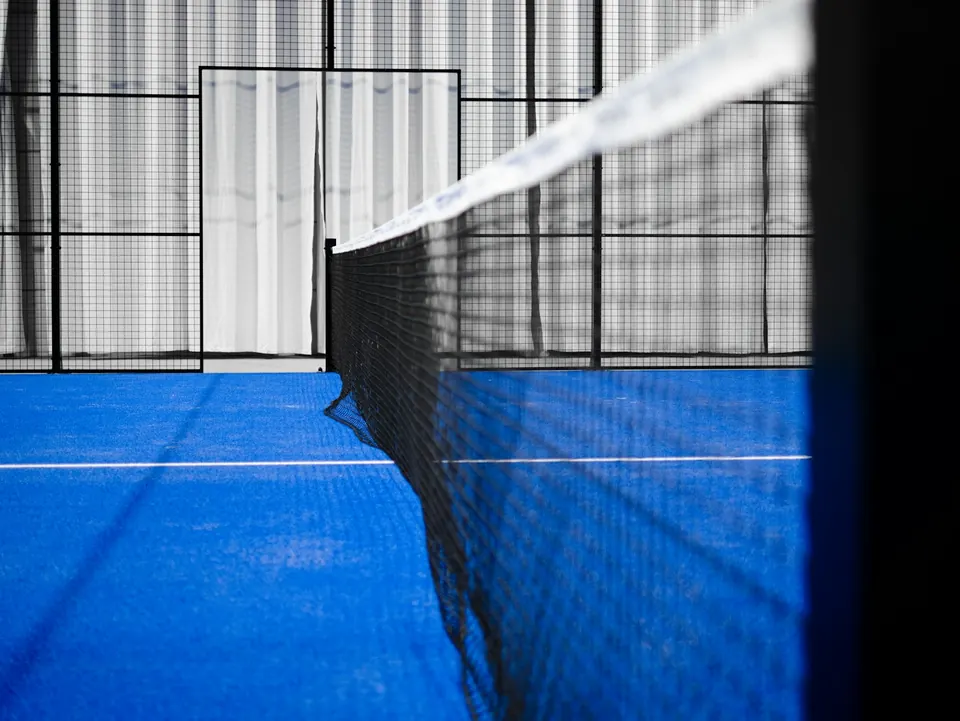

C6 - Optimiza y sirve tus imágenes
Comprimí una foto de la actividad C5 con Pillow y la guardé en WebP en dos tamaños.
- JPEG original (1600 px de ancho): 364.524 bytes.
- WebP de 960 px: 52.896 bytes. Ahorro: 85,49 %.
- WebP de 480 px: 16.966 bytes. Ahorro: 95,35 %.

Prueba en DevTools
- Abre esta página con Live Server y pulsa F12.
- En Network, marca Disable cache y selecciona el filtro Img.
- Activa la vista adaptable (Ctrl + Mayús + M). Configura el DPR en 1 si está disponible.
- Prueba con 390 px y con 1280 px de ancho. Recarga la página en cada tamaño y revisa el nombre del archivo WebP que aparece en Network.